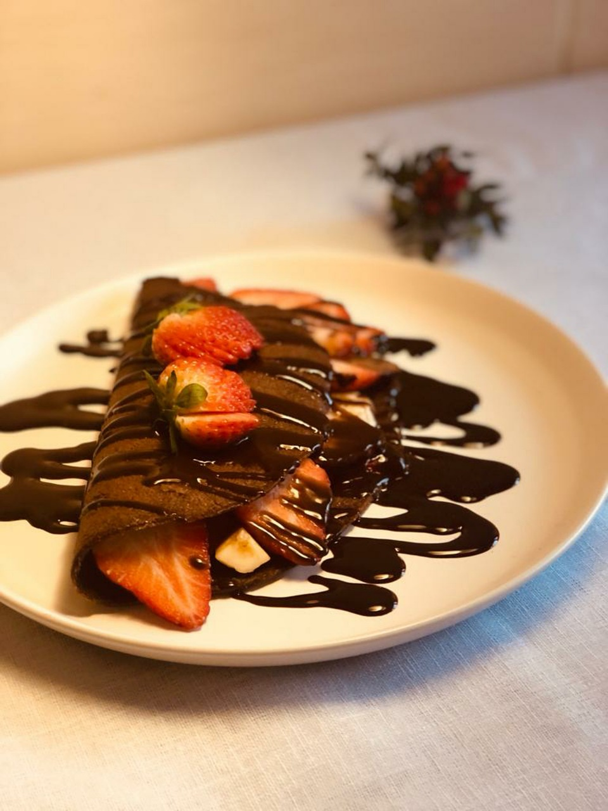

Home
How to Make Strawberry Crepes

Description
A strawberry crepe is a thin, delicate pancake filled with fresh strawberries and whipped cream, often folded or rolled for serving. Lightly sweet and versatile, it’s a popular dessert or brunch treat that can be topped with powdered sugar, chocolate, or extra fruit.
Ingredients
- 1 cup all-purpose flour
- 2 large eggs
- 1 cup milk
- 2 tbsp butter, melted (plus more for cooking)
- 1 tbsp sugar
- 1 tsp vanilla extract
- Pinch of salt
- 1 cup fresh strawberries, sliced
- 1–2 tbsp sugar (or honey, optional)
- ½ cup whipped cream (or sweetened cream cheese/mascarpone for richness)
Steps:
- Make the crepe batter:
- In a bowl, whisk together flour, eggs, milk, melted butter, sugar, vanilla, and salt until smooth.
- Let rest for 15–20 minutes (this makes softer crepes).
- Cook the crepes:
- Heat a nonstick pan over medium heat and lightly butter it.
- Pour about ¼ cup of batter, swirl to coat thinly.
- Cook 1–2 minutes until edges lift, then flip and cook 30–60 seconds.
- Repeat with remaining batter.
- Prepare the strawberries:
- Toss sliced strawberries with a little sugar or honey if desired.
- Assemble:
- Spread whipped cream inside each crepe, add strawberries, and fold or roll.
- Top with powdered sugar, more strawberries, and drizzle of chocolate or Nutella if you like.